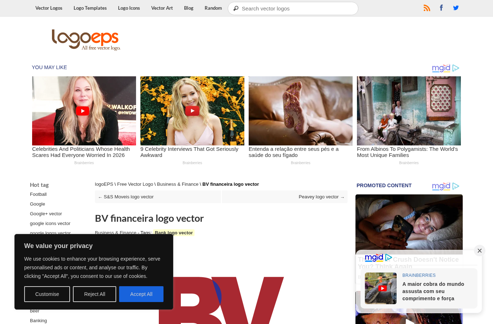
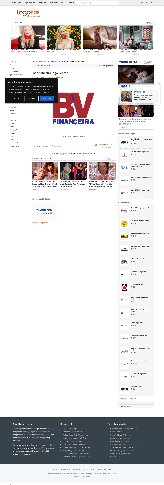

Sistema de Investigação de Marca e Identidade Online
https://logoeps.com/bv-financeira-logo-vector/33763/
Prioridade: HIGH · Cenário: B_AMBIGUOUS_COMMUNICATION · Revisão humana: PENDING
A página analisada pertence ao site LogoEPS.com, uma biblioteca de vetores e logotipos para designers. Trata-se de um catálogo que oferece o download do arquivo de logotipo da BV Financeira em formatos EPS/AI/CDR. Não há qualquer intermediação financeira, oferta de crédito ou atividade de correspondente bancário, enquadrando-se expressamente na triagem como fora do escopo da investigação (NOT_RELEVANT / NO_INDICATION). [Revisor: DOWNGRADE] O site logoeps.com é uma biblioteca de download gratuito de arquivos vetoriais (.EPS, .AI, .CDR). Não atua como loja de veículos, instalador solar, financeira ou correspondente bancário. De acordo com as diretrizes de filtragem do SIMIO, fornecedores de insumos gráficos e repositórios não constituem alvo de investigação de correspondentes bancários, ensejando downgrade imediato para NO_INDICATION com prioridade LOW.


| Ref | Tipo | Local | Conteúdo |
|---|---|---|---|
| E-URL | domain | url | URL final: https://logoeps.com/bv-financeira-logo-vector/33763/ (domínio: logoeps.com) |
| E-COLLECT | network | collection | Status da coleta: OK; HTTP 200; ocorrências: network did not become idle (continuing) |
| E-DISC-001 | text | search_index | Índice de busca (lens): BV financeira logo vector in (.EPS, .AI, .CDR) free download — Imagem visualmente semelhante ao logotipo antigo (fonte: logoEPS.com) |
| E-SHOT-VIEWPORT | screenshot | viewport | evidence/Cc10c011b66/attempt-2/viewport.png (sha256 493c324e0d5ffd85…) |
| E-SHOT-FULL | screenshot | page | evidence/Cc10c011b66/attempt-2/fullpage.png (sha256 54ddf56327aedaf6…) |
| E-TITLE | title | head | BV financeira logo vector in (.EPS, .AI, .CDR) free download |
| E-META-1 | meta | head | description: BV financeira vector logo EPS, AI, CDR. Free download logo BV financeira vector in Adobe Illustrator (EPS) file format |
| E-META-2 | meta | head | og:site_name: logoEPS.com |
| E-META-3 | meta | head | og:title: BV financeira logo vector in (.EPS, .AI, .CDR) free download |
| E-META-4 | meta | head | og:description: BV financeira vector logo EPS, AI, CDR. Free download logo BV financeira vector in Adobe Illustrator (EPS) file format |
| E-META-5 | meta | head | author: Dian N |
| E-CANONICAL | meta | head | https://logoeps.com/bv-financeira-logo-vector/33763/ |
| E-HEAD-1 | heading | page | BV financeira logo vector |
| E-HEAD-2 | heading | page | About Logoeps.com |
| E-HEAD-3 | heading | page | Recent post |
| E-HEAD-4 | heading | page | Recent downloads |
| E-HDR | text | header | logoEPS.com | BV financeira logo vector Business & Finance - Tags: Bank logo vector |
| E-FOLD | text | viewport (acima da dobra) | We value your privacy We use cookies to enhance your browsing experience, serve personalised ads or content, and analyse our traffic. By clicking "Accept All", you consent to our use of cookies. Customise Reject All Accept All Vector Logos Logo Templates Logo Icons Vector Art Blog Random logoEPS.com logoEPS \ Free Vector Logo \ Business & Finance \ BV financeira logo vector ← S&S Moveis logo vector Peavey logo vector → BV financeira logo vector Business & Finance - Tags: Bank logo vector Hot tag Football Google Google+ vector google icons vector google logos vector facebook Twitter facebook logos vector facebook vector Twitter logos vector Twitter icons vector Disney beer Banking |
| E-FTR | text | footer | About Logoeps.com Vector logos are essential design elements used by designers every day. Logo EPS offers the most comprehensive and flexible search engine for brand identity graphics, with a complete and growing collection. It’s the world’s largest library of logo files in vector formats, available for free download. You can easily browse or search through more than 200,000 scalable logo designs. Recent post Grok Bot icon logo Copeland Logo Vector Files Wabash Logo PNG & Vector Files Aetna Vector Logo + PNG Files Danosa Logo SVG, , & PNG CelcomDigi Logo Vector Files Chieftec Logo Vector (SVG, ) + PNG Audi R8 Logo PNG & Vector FC Seoul Logo PNG & Vector Files CANMAKE Vector Logo + PNG Files Recent downloads Werder Bremen 1980 logo vector 129 times Scoop it logo 95 times SpaceXAI Logo Vector 0 times Jupiler logo vector 349 times ASUS logo vector 5,726 times ASK Koflach logo vector 114 times TSG 1899 Hoffenheim logo vector 206 times Misfits band logo vector 463 times Virtus Entella logo vector 200 times Pictify logo 42 times ABOUT ADVERTISE CONTACT ABOUT DMCA POLICY SITEMAP Disclaimer: Products, names and logo mentioned are the property of their respective owners. © 2026 LogoEPS.com |
| E-NAV | nav | header | Vector Logos <https://logoeps.com/free-vector-logo/> | Logo Templates <https://logoeps.com/logo-templates/> | Logo Icons <https://logoeps.com/vector-logo-icons/> | Vector Art <https://logoeps.com/free-vector-art/> | Blog <https://logoeps.com/design-articles/> | Random <https://logoeps.com/random-logo-vector/> | Subscribe via RSS <https://feeds.feedburner.com/logoeps> | Follow us on Facebook <https://www.facebook.com/LogoEPS> | Follow us on Twitter <https://twitter.com/logoeps> | logoEPS.com <https://logoeps.com/> | ← S&S Moveis logo vector <https://logoeps.com/ss-moveis-vector-logo/47194/> | Peavey logo vector → <https://logoeps.com/peavey-logo-vector-eps-ai-cdr/7648/> | Business & Finance <https://logoeps.com/free-vector-logo/business-finance/> | Bank logo vector <https://logoeps.com/tag/bank-logo-vector/> |
| E-CTA-1 | cta | page | Customise |
| E-CTA-2 | cta | page | Reject All |
| E-CTA-3 | cta | page | Accept All |
| E-CTA-4 | cta | page | Follow @logoeps <https://twitter.com/logoeps> |
| E-CONTACT-1 | contact | nav | Follow us on Facebook <https://www.facebook.com/LogoEPS> |
| E-IMG-1 | image | page (acima da dobra) | imagem alt='BV financeira logo vector' src=https://logoeps.com/wp-content/uploads/2013/01/bv-financeira-logo-vector.png (400x400, acima da dobra) |
| E-IMG-2 | image | page | imagem alt='SulAmerica vector logo' src=https://logoeps.com/wp-content/uploads/2013/05/sulamerica-vector-logo-200x200.png (164x164, abaixo da dobra) |
| E-IMG-3 | image | page | imagem alt='Royal Bank of Scotland logo vector' src=https://logoeps.com/wp-content/uploads/2012/12/royal-bank-of-scotland-logo-vector-110x110.png (75x75, abaixo da dobra) |
| E-IMG-4 | image | page | imagem alt='Ziraat Bankasi logo vector' src=https://logoeps.com/wp-content/uploads/2012/07/ziraat-bankasi-logo-vector-01-110x110.png (75x75, abaixo da dobra) |
| E-IMG-5 | image | page | imagem alt='Standard Chartered Hong Kong logo vector' src=https://logoeps.com/wp-content/uploads/2013/01/standard-chartered-hong-kong-logo-vector-110x110.png (75x75, abaixo da dobra) |
| E-IMG-6 | image | page | imagem alt='Bank of America logo vector' src=https://logoeps.com/wp-content/uploads/2011/06/bank-of-america-logo-vector-110x110.png (75x75, abaixo da dobra) |
| E-IMG-7 | image | page | imagem alt='Bank Of China logo vector, BOC logo' src=https://logoeps.com/wp-content/uploads/2011/06/bank-of-china-logo-vector-01-110x110.png (75x75, abaixo da dobra) |
| E-IMG-8 | image | page | imagem alt='Reliant Energy logo vector' src=https://logoeps.com/wp-content/uploads/2012/12/reliant-energy-logo-vector-110x110.png (75x75, abaixo da dobra) |
| E-IMG-9 | image | page | imagem alt='ICR ISO9001 vector logo' src=https://logoeps.com/wp-content/uploads/2013/03/icr-iso9001-vector-logo-110x110.png (75x75, abaixo da dobra) |
| E-IMG-10 | image | page | imagem alt='Western Union logo' src=https://logoeps.com/wp-content/uploads/2012/04/western-union-logo-vector-01-110x110.png (75x75, abaixo da dobra) |
| E-IMG-11 | image | page | imagem alt='Adelaide Bank vector logo' src=https://logoeps.com/wp-content/uploads/2013/12/adelaide-bank-vector-logo-110x110.png (75x75, abaixo da dobra) |
| E-IMG-12 | image | page | imagem alt='A-1 Tree Service vector logo' src=https://logoeps.com/wp-content/uploads/2013/07/a-1-tree-service-vector-logo-110x110.png (75x75, abaixo da dobra) |
| E-IMG-13 | image | page | imagem alt='Finansbank logo vector' src=https://logoeps.com/wp-content/uploads/2013/02/finansbank-logo-vector-110x110.png (75x75, abaixo da dobra) |
| E-IMG-14 | image | page | imagem alt='Vitol logo vector, logo Vitol in .EPS format' src=https://logoeps.com/wp-content/uploads/2012/04/vitol-vector-150x150.gif (75x75, abaixo da dobra) |
| E-IMG-15 | image | page | imagem alt='Bank Austria UniCredit vector logo' src=https://logoeps.com/wp-content/uploads/2014/01/bank-austria-unicredit-vector-logo-110x110.png (75x75, abaixo da dobra) |
| E-IMG-16 | image | page | imagem alt='RBC - Royal Bank vector logo' src=https://logoeps.com/wp-content/uploads/2013/05/rbc-royal-bank-vector-logo-110x110.png (75x75, abaixo da dobra) |
| E-IMG-17 | image | page | imagem alt='LBBW vector logo' src=https://logoeps.com/wp-content/uploads/2014/01/lbbw-vector-logo-110x110.png (75x75, abaixo da dobra) |
| E-IMG-18 | image | page | imagem alt='IDBI Bank vector logo' src=https://logoeps.com/wp-content/uploads/2014/01/idbi-bank-vector-logo-110x110.png (75x75, abaixo da dobra) |
| E-IMG-19 | image | page | imagem alt='Quick Home Delivery vector logo' src=https://logoeps.com/wp-content/uploads/2013/05/quick-home-delivery-vector-logo-110x110.png (75x75, abaixo da dobra) |
| E-IMG-20 | image | page | imagem alt='Honeywell logo vector' src=https://logoeps.com/wp-content/uploads/2012/12/honeywell-logo-vector-110x110.png (75x75, abaixo da dobra) |
| E-TXT-001 | text | page | logoEPS \ Free Vector Logo \ Business & Finance \ BV financeira logo vector |
| E-TXT-002 | text | page | BV financeira logo vector |
| E-TXT-003 | text | page | BV financeira logo vector preview |
| Dimensão | Sinal | Achado | Refs |
|---|---|---|---|
| DECLARED_COMMERCIAL_IDENTITY | LEGITIMATE | O site pertence ao LogoEPS.com, um repositório de download de arquivos vetoriais de logotipos para designers, sem qualquer oferta ou intermediação de crédito. | E-URL E-META-2 E-HEAD-2 E-FTR |
| LOGO_USAGE | NEUTRAL | O site disponibiliza para download o arquivo vetorial do logotipo histórico da BV Financeira (B vermelho e V azul), em contexto puramente de catálogo gráfico para designers. | E-IMG-1 E-SHOT-FULL E-TITLE E-HEAD-1 |
| CORRESPONDENT_TRANSPARENCY | NEUTRAL | Não aplicável, pois não se trata de correspondente bancário, loja de veículos ou empresa ofertando serviços financeiros regulados. | E-URL E-FTR |
A página analisada pertence ao site LogoEPS.com, uma biblioteca de vetores e logotipos para designers. Trata-se de um catálogo que oferece o download do arquivo de logotipo da BV Financeira em formatos EPS/AI/CDR. Não há qualquer intermediação financeira, oferta de crédito ou atividade de correspondente bancário, enquadrando-se expressamente na triagem como fora do escopo da investigação (NOT_RELEVANT / NO_INDICATION).
Nenhum CNPJ ou razão social identificáveis no conteúdo coletado.
| Tipo | Valor | Ref | Contexto |
|---|---|---|---|
| domain | logoeps.com | E-URL | |
| social_profile | https://www.facebook.com/LogoEPS | E-NAV | |
| trade_name | logoEPS.com | E-META-2 |
Mapeamento indicativo para apoio à auditoria. Não constitui conclusão regulatória; a decisão definitiva pertence à auditoria.
Fonte: NORMATIVE
Art. 14. O contrato de correspondente deve estabelecer: [...] II - vedação à utilização, pelo contratado, de logomarca ou de outros atributos que sejam similares aos adotados pela instituição contratante em suas agências, postos de atendimento, sítio eletrônico na internet, aplicativo ou outras plataformas de comunicação em rede;
Hipótese: Uso de logomarca, uso excessivo/desproporcional ou de atributos similares aos adotados pela contratante em seus canais. A norma disciplina correspondentes contratados; o responsável não foi identificado como correspondente.
Evidência observada: E-IMG-1 E-IMG-2 E-IMG-3
Informação faltante:
Fonte: NORMATIVE
Art. 14. O contrato de correspondente deve estabelecer: [...] III - divulgação ao público, pelo contratado, de sua condição de prestador de serviços à instituição contratante, identificada pelo nome com que é conhecida no mercado, com descrição dos produtos e serviços oferecidos e canais de contato da instituição contratante, inclusive de sua ouvidoria, em local visível, em destaque e em formato legível, por meio de: a) sítio eletrônico do correspondente na internet, acessível na página inicial; b) aplicativo e outras plataformas de comunicação em rede do correspondente; [...]
Hipótese: Há declaração da condição de correspondente/prestador, mas outros elementos da página (DECLARED_COMMERCIAL_IDENTITY) podem contradizê-la ou reduzir seu efeito (destaque, legibilidade e identificação da contratante a verificar). A norma disciplina correspondentes contratados; o responsável não foi identificado como correspondente.
Evidência observada: E-FOLD E-FTR E-HDR E-NAV E-TITLE
Informação faltante:
Fonte: NORMATIVE
Art. 3º O correspondente atua por conta e sob as diretrizes da instituição contratante, que assume inteira responsabilidade pelo atendimento prestado aos clientes e usuários por meio do contratado.
Evidência observada: —
Se o responsável não for correspondente contratado, os indícios podem caracterizar uso indevido de marca ou fraude, fora do escopo da Res. 4.935: avaliar encaminhamento às áreas jurídica/segurança.
Limitações: requisitos contratuais/internos não fornecidos: mapeamento limitado ao texto normativo
Decisão: DOWNGRADE → NO_INDICATION / LOW
O site logoeps.com é uma biblioteca de download gratuito de arquivos vetoriais (.EPS, .AI, .CDR). Não atua como loja de veículos, instalador solar, financeira ou correspondente bancário. De acordo com as diretrizes de filtragem do SIMIO, fornecedores de insumos gráficos e repositórios não constituem alvo de investigação de correspondentes bancários, ensejando downgrade imediato para NO_INDICATION com prioridade LOW.
| Tema | Severidade | Questionamento | Refs |
|---|---|---|---|
| FORA_DO_ESCOPO_COBAN | HIGH | A página pertence ao repositório de vetores e recursos gráficos logoEPS.com, tratando-se exclusivamente de disponibilização de arquivo de logotipo para download por designers e profissionais gráficos, sem qualquer oferta de crédito, produtos bancários ou atuação como correspondente bancário (COBAN). | E-URL E-TITLE E-META-1 E-FTR E-SHOT-FULL |
| domain_attribution | MEDIUM | Responsável pela página não identificado; a conclusão sobre a marca não pode ser atribuída a um estabelecimento específico. | E-URL |
| Fonte | Consulta / hipótese | URL original | Título / trecho |
|---|---|---|---|
| lens | https://www.nacionalenergia.solar/assets/logo-bv-BGRv-znK.png H12-legacy-logo:lens | https://logoeps.com/bv-financeira-logo-vector/33763/ | BV financeira logo vector in (.EPS, .AI, .CDR) free download Imagem visualmente semelhante ao logotipo antigo (fonte: logoEPS.com) |
Original: https://logoeps.com/bv-financeira-logo-vector/33763/
Final: https://logoeps.com/bv-financeira-logo-vector/33763/
| Artefato | Caminho | SHA-256 | Bytes |
|---|---|---|---|
| screenshot_viewport | evidence/Cc10c011b66/attempt-2/viewport.png | 493c324e0d5ffd857fbab36eab11787930498281b8d540077db74d1978263df2 | 644535 |
| screenshot_full | evidence/Cc10c011b66/attempt-2/fullpage.png | 54ddf56327aedaf6ff1cf5c5d8405997d008cf89c863e9792e0d2ed0ff959d92 | 1197189 |
| html | evidence/Cc10c011b66/attempt-2/page.html.txt | 746188a364cde60d828573e407b13bf1ba51a86c388941c0c69ec0fbbc8d40c5 | 129813 |
| text | evidence/Cc10c011b66/attempt-2/text.txt | 4c9e273d654d91294abc4d9c257817398439df8f75d996d484a640fc1c5a0718 | 2935 |
| page_data | evidence/Cc10c011b66/attempt-2/page.json | f0e150d8a3ffb893be8351995b304590be29753a242aec645247696ee6127585 | 28325 |
| Quando | De | Para | Nota |
|---|---|---|---|
| 2026-11-25T20:48:28+00:00 | DISCOVERED | QUEUED | prioritised (score 4.0) |
| 2026-11-25T20:48:50+00:00 | QUEUED | COLLECTING | |
| 2026-11-25T20:49:00+00:00 | COLLECTING | COLLECTED | |
| 2026-11-25T20:49:00+00:00 | COLLECTED | ANALYZING | |
| 2026-11-25T20:49:02+00:00 | ANALYZING | COLLECTED | prepare error, retry 1: UnboundLocalError |
| 2026-11-25T20:49:06+00:00 | COLLECTED | ANALYZING | |
| 2026-11-25T20:49:08+00:00 | ANALYZING | COLLECTED | prepare error, retry 2: UnboundLocalError |
| 2026-11-25T20:49:12+00:00 | COLLECTED | ANALYZING | |
| 2026-11-25T20:49:13+00:00 | ANALYZING | FAILED | prepare failed: UnboundLocalError: cannot access local variable 'is_disc' where it is not associated with a value |
| 2026-11-25T20:58:33+00:00 | FAILED | QUEUED | retry requested by operator |
| 2026-11-25T20:59:08+00:00 | QUEUED | COLLECTING | |
| 2026-11-25T20:59:18+00:00 | COLLECTING | COLLECTED | |
| 2026-11-25T20:59:18+00:00 | COLLECTED | ANALYZING | |
| 2026-11-25T20:59:30+00:00 | ANALYZING | REVIEWING | |
| 2026-11-25T20:59:40+00:00 | REVIEWING | COMPLETED |